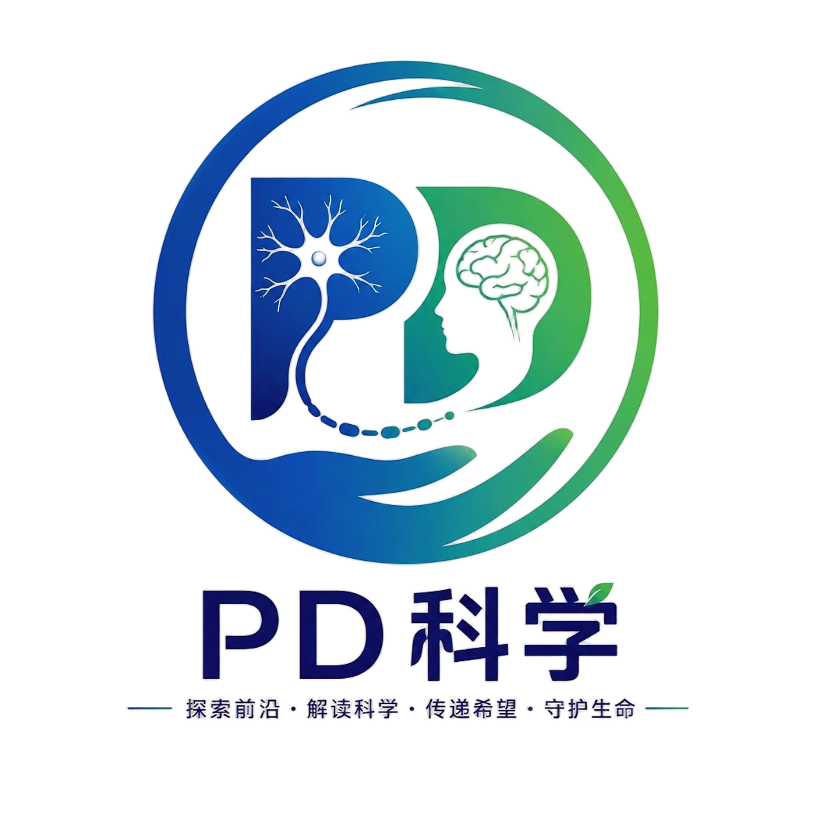
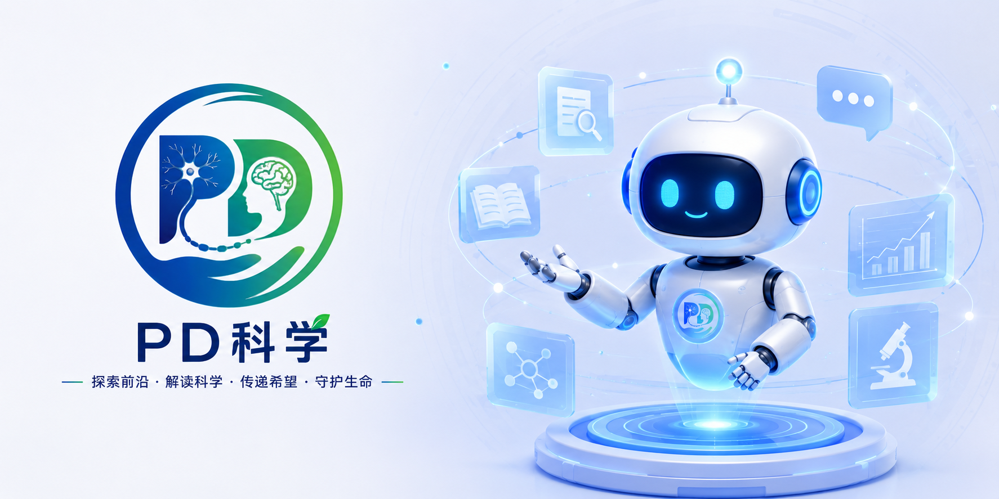
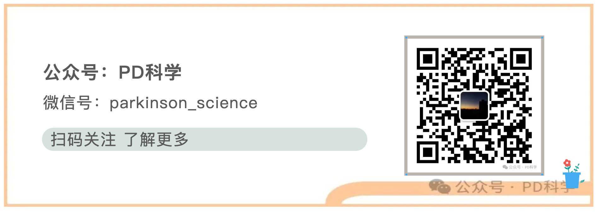

正在读取 GitHub 留言...
如果网络较慢，可以直接点击“查看全部留言”。

PD科学点击“发帖提问”后，用 GitHub 账号登录即可提交。每一个问题是一条 Issue，其他人可以在该 Issue 下继续留言回复。
Latest questions
如果网络较慢，可以直接点击“查看全部留言”。

Literature room
关注疾病修饰靶点，讨论阻断病理蛋白传播的治疗可能性。
把药物、DBS、磁波刀、经颅刺激的作用机制放进统一脑网络框架。
追踪 iPSC/ESC 多巴胺细胞移植的安全性、疗效信号和长期随访。
公众号
扫码进入公众号，适合承接长文、活动通知、访谈招募和社区精选帖。
